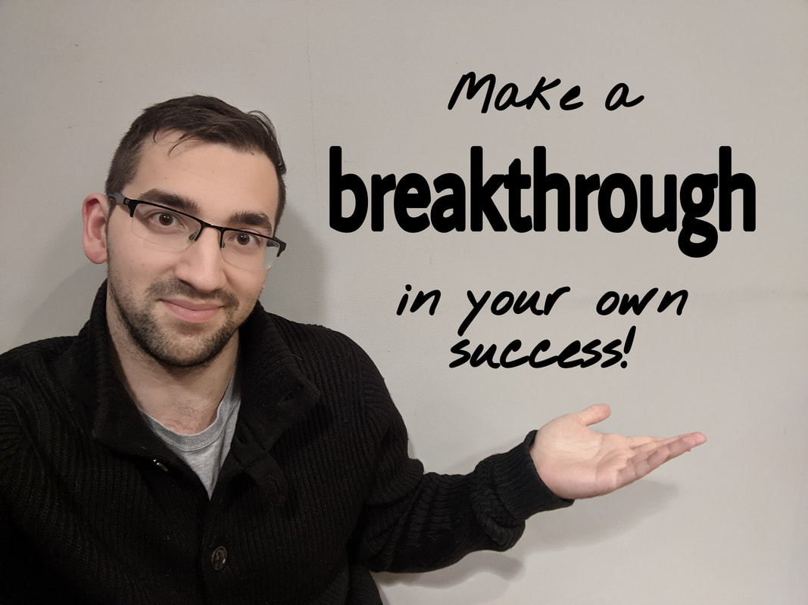

Reserve Your Free Introductory Call

Your first step is to book a free 20-minute introductory call with me where we will discuss your current learning goals, current coursework to date (if applicable), the classes that I teach, how I can best help you, teaching methods, scheduling, billing, and anything else you'd like to discuss.
Register for your introductory call using the form below, and please keep in mind the following points:
These sessions are free of charge. I'm looking forward to meeting you and helping YOU make a breakthrough in your own success! Want to connect via email beforehand? Email me at tutor@trevorkafka.com Copy to clipboard . ~Trevor Kafka
